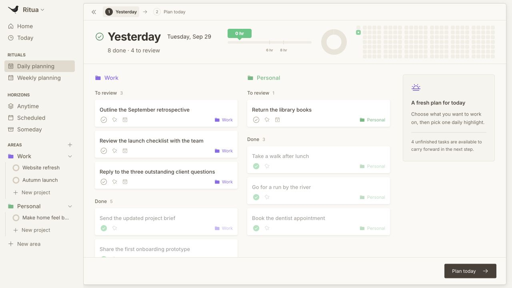
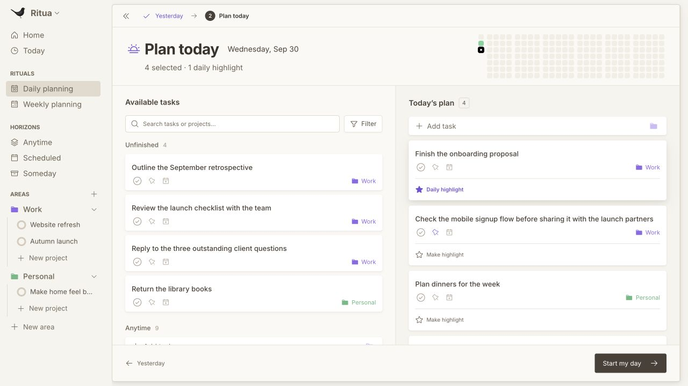
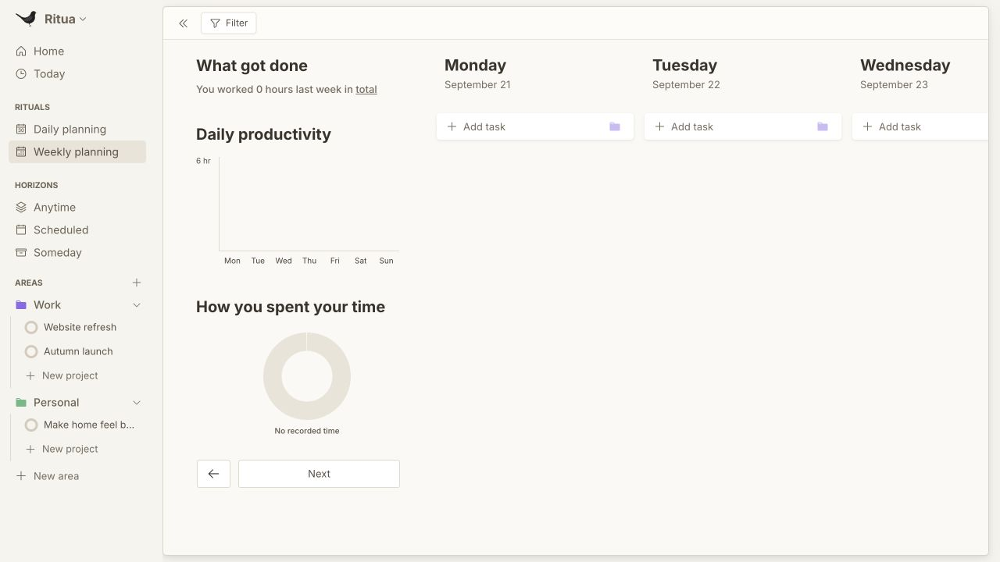
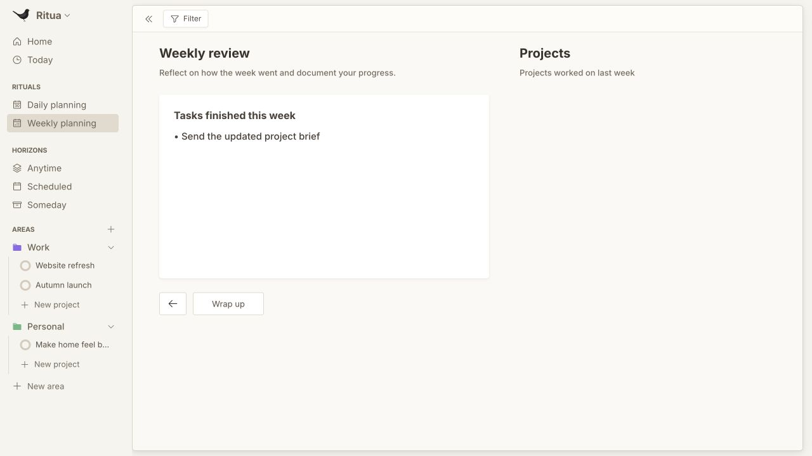
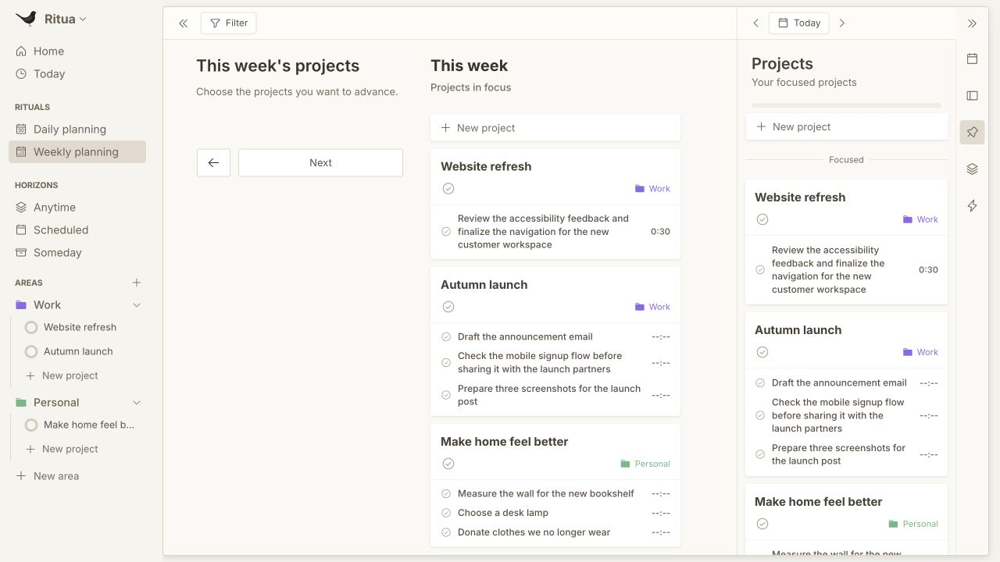
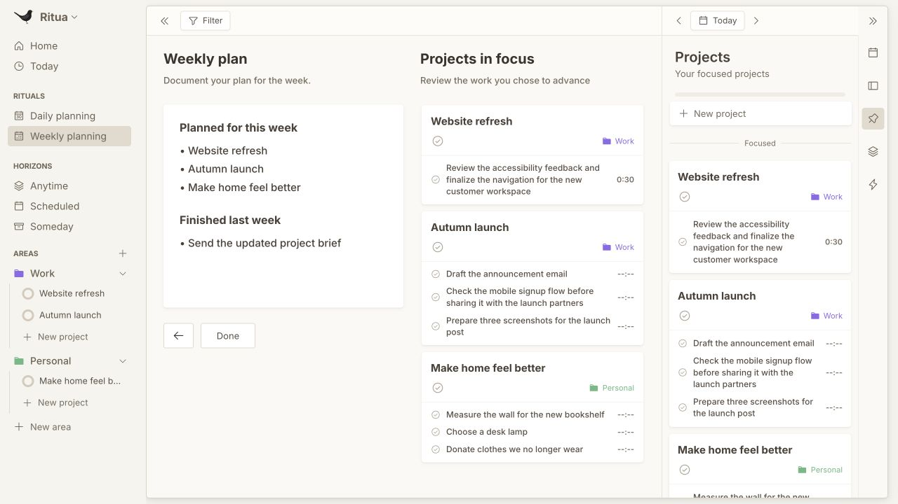
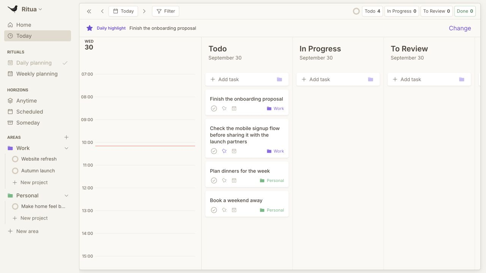
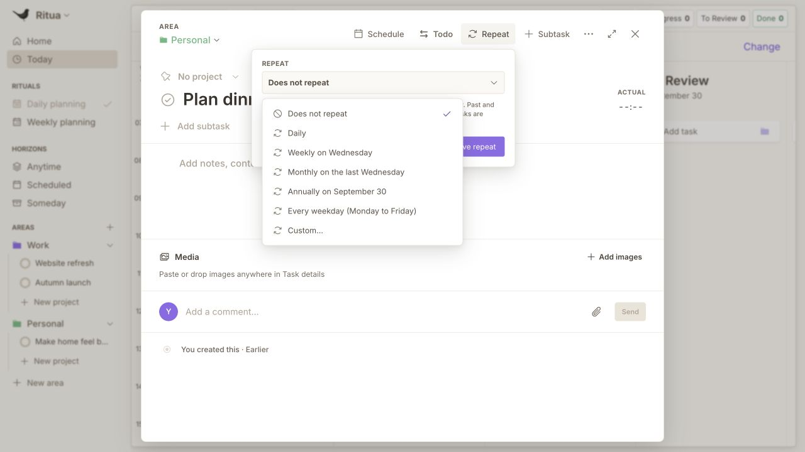

Ritua: how the current product fits the proposed goal
Ritua already provides a recurring rhythm for reviewing, choosing and executing work. The proposed vision extends that foundation by connecting recurring practices to intended outcomes and explicit learning decisions.
Captured on 30 September 2026 from the current production renderer in the local browser preview, using the explicit Daily Planning test fixture. Sample tasks are illustrative, not the user's activity. The canonical model and review/time calculations were also inspected. No production source was edited. Native persistence, date rollover, screen-reader use and a full keyboard journey were outside this assessment.
| Proposed layer | Current foundation | Remaining product gap |
|---|
| Identity | Areas organize life/work contexts. Local profile stores a name and avatar. | No explicit user-authored principles, roles or identity commitments. |
| Direction | Projects, weekly project focus and a daily highlight. | No separate outcome target or success measure. The Project model represents tasks, notes and completion. |
| Systems | Recurring tasks and recurring calendar sessions, including repeated task templates. | No explicit connection between a recurring practice, its expected result, evidence and a rule for adaptation. |
| Rituals | Daily planning and weekly planning, with review before selecting work. | The rhythm exists; it can carry more useful questions about results. |
| Actions | Tasks, subtasks, Today statuses, dates, calendars and project membership. | Actions do not have an explicit relationship to a behavioral system or outcome measure. |
| Feedback | Completed tasks, time summaries, activity history and editable review notes. | Feedback currently describes activity. It does not evaluate whether the activity is producing the desired result. |
Recommended next product step: link one recurring task or session to a desired outcome and one measure, then surface execution, outcome change and a chosen adjustment in the existing weekly review. Identity can provide optional context once that loop is useful.
Evidence caution: reported time sums task actualMinutes and calendar session durations. A scheduled session's duration is not independent proof that the behavior occurred. Any future AI observation about coding or customer conversations needs clear evidence provenance and behavioral classification. No implemented AI assistant layer was found in the inspected production source.
1. Yesterday's review
Health: solid retrospective foundation.
The screen groups yesterday's work by Area and completion, shows recorded time and activity, and leads into a fresh plan. Its visible questions concern task status and carrying work forward. It offers no explicit assessment of an intended result.
Accessibility observation: completed cards and their controls appear pale; contrast needs measurement. Time and activity have descriptive accessible labels. Keyboard operation was not comprehensively tested.

2. Plan today
Health: solid prioritization foundation.
Available tasks sit beside a deliberately chosen plan and one daily highlight. Work can be drawn from unfinished items, Anytime and Projects. This is an appropriate place to expose the purpose of an action without adding a separate identity setup flow.
Accessibility observation: task titles, search, filters and highlight controls have accessible names. Small, pale icon controls merit a target-size and contrast check. Drag alternatives were not audited end to end.

3. Weekly activity history
Health: useful activity foundation; results remain unmeasured.
What got done, daily productivity and Area time allocation put recorded activity before the next plan. The test fixture has little last-week data and zero recorded time, so this capture establishes the structure rather than the quality of a populated trend.
Accessibility observation: charts have descriptive labels in the observed accessibility tree. Chart interpretation with a screen reader and color/contrast measurement remain unverified.

4. Weekly review
Health: functioning reflection shell; strongest opportunity.
The review is placed before choosing the next week's projects. Its editable text starts with Tasks finished this week, generated from completed task titles. This is the natural point to add whether a recurring practice ran, what result it produced and what should change.
Accessibility observation: the editable review exposes a multiline textbox name. Editing behavior and focus across the complete ritual were not fully tested.

5. Weekly project focus
Health: solid mechanism for selecting work.
The user chooses projects to advance. Projects are displayed through their task lists and completion controls. Focus provides a decision surface, but a project completion percentage does not specify an external outcome such as customers acquired.
Accessibility observation: project controls have specific accessible names. The duplicated focused-project list and dragging behavior need a dedicated keyboard/screen-reader review before drawing an accessibility conclusion.

6. Weekly plan
Health: useful written summary; adaptation is informal.
The plan is generated from focused project titles and finished tasks from last week, then can be edited. There is room to carry a chosen system adjustment into this plan. The current content does not encode a behavior target, expected outcome or experiment decision.
Accessibility observation: the plan exposes a named multiline textbox. Reading order and editing affordances were inspected visually and through the DOM, not through assistive technology.

7. Today execution
Health: solid connection from planning to action.
In the temporary browser workspace, Start my day moved the four chosen tasks onto Today and carried over the daily highlight. The status board and adjacent calendar provide the execution layer the proposed vision needs.
Accessibility observation: status shortcuts expose task counts and the calendar advertises keyboard entry. At the captured viewport the Done column is offscreen to the right; access at narrow widths and high zoom needs a separate check.

8. Task recurrence
Health: existing repeat mechanics; system intent is absent.
Repeat offers daily, weekly, monthly, annual, weekday and custom cadences. The dialog explains how historical occurrences are preserved. This supplies scheduling mechanics for a system, while its purpose, success measure and adaptation rule are absent.
Accessibility observation: recurrence choices expose menuitemradio semantics and the dialog names its controls. The menu was opened and inspected; no repeat rule was saved and native recurrence generation was not tested.

Code grounding
src/domain/models.ts: Task, Project, Area and CalendarSession business shapes; recurrence and repeated session task templates.src/domain/workspace-types.ts: canonical task, project, area and event entity kinds.src/domain/workspace-fields.ts: durable planning, review, history and preference fields.src/renderer/src/app/views/weekly-planning/WeeklyPlanningView.jsx: history → review → project focus → plan; generated review and plan text.src/domain/task-time.ts: actual task time and session duration aggregation.src/domain/planning-entry.ts: entry into pending daily and Monday weekly planning.